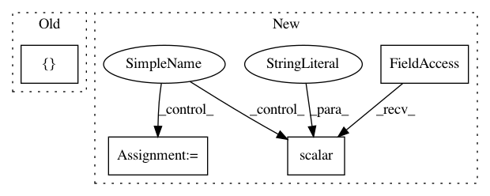

86ce5d52134a56806112ff8664e4034338e0e05a,yarll/agents/ppo/ppo.py,PPO,learn,#PPO#,208
Before Change
batch_actions = np.array(actions)[batch_indices]
batch_advs = np.array(advs)[batch_indices]
batch_rs = np.array(rs)[batch_indices]
fetches = [self.train_op]
if (n_updates % 1000) == 0:
fetches.append(self.model_summary_op)
feed_dict = {
self.states: batch_states,
After Change
batch_actions = np.array(actions)[batch_indices]
batch_advs = np.array(advs)[batch_indices]
batch_rs = np.array(rs)[batch_indices]
train_actor_loss, train_critic_loss, train_loss = self.train(batch_states,
batch_actions,
batch_advs,
batch_rs)
tf.summary.scalar("model/loss", train_loss, step=n_updates)
tf.summary.scalar("model/actor_loss", train_actor_loss, step=n_updates)
tf.summary.scalar("model/critic_loss", train_critic_loss, step=n_updates)
n_updates += 1
if self.config["save_model"]:
In pattern: SUPERPATTERN
Frequency: 3
Non-data size: 4
Instances
Project Name: arnomoonens/yarll
Commit Name: 86ce5d52134a56806112ff8664e4034338e0e05a
Time: 2019-03-21
Author: arno.moonens@gmail.com
File Name: yarll/agents/ppo/ppo.py
Class Name: PPO
Method Name: learn
Project Name: OpenNMT/OpenNMT-tf
Commit Name: 963710e3d38c9ad1d8b8cc1419a3bd1b3dddde1f
Time: 2018-11-09
Author: guillaumekln@users.noreply.github.com
File Name: opennmt/utils/optim.py
Class Name:
Method Name: optimize
Project Name: senarvi/theanolm
Commit Name: 5b261d143208c68182083052d8dade06102e1c7a
Time: 2016-04-27
Author: seppo.git@marjaniemi.com
File Name: theanolm/optimizers/basicoptimizer.py
Class Name: BasicOptimizer
Method Name: __init__